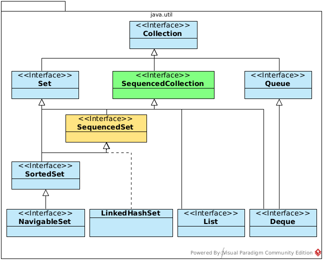
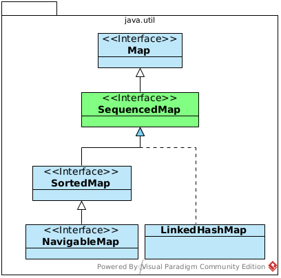

Ein Blick auf die Neuerungen und Vorteile

Frankenwerft & Remote
04.12.2023, Artjom S., Justus B.
Ein Blick auf die Neuerungen und Vorteile
Frankenwerft & Remote
04.12.2023, Artjom S., Justus B.

Artjom Suschtschenko (Software Engineer)
|
Justus Braun (Software Engineer)
|
|
JEP 444: Virtual Threads
Thread per request
Weniger Hardware trotz mehr durchlauf
Optimale Auslastung
Thread thread = Thread.ofVirtual().start(() -> System.out.println("Hello"));
thread.join();Hier mit einem Thread Builder
Thread.Builder builder = Thread.ofVirtual().name("MyThread");
Runnable task = () -> {
System.out.println("Running thread");
};
Thread t = builder.start(task);
System.out.println("Thread t name: " + t.getName());
t.join();JEP 430: String Templates (Preview)
Probleme
Sehr nervig zu ändern
Nicht gut lesbar
String s = x + " plus " + y + " equals " + (x + y);oder
String s = String.format("%2$d plus %1$d equals %3$d", x, y, x + y);STR."\{x} plus \{y} equals \{x + y}";Json Block
STR."""
{
"feelsLike": "\{ feelsLike }",
"temperature": "\{ temperature }",
"unit": "\{ unit }"
}
""";Json Block mit Format
FMT."""
{
"feelsLike": "%1s\{ feelsLike }",
"temperature": "%2.2f\{ temperature }",
"unit": "%1s\{ unit }"
}
""" ;var JSON = StringTemplate.Processor.of(
(StringTemplate st) -> new JSONObject(st.interpolate())
);
String name = "Joan Smith";
String phone = "555-123-4567";
String address = "1 Maple Drive, Anytown";
JSONObject doc = JSON."""
{
"name": "\{name}",
"phone": "\{phone}",
"address": "\{address}"
};
""";JEP 455: Primitive types in Patterns, instanceof, and switch (Preview)
if (anyObj instanceof String str) {
...
}static String asStringValue(Object anyValue) {
String result = "n/a";
if (anyValue instanceof String str) {
result = str;
} else if (anyValue instanceof JSONObject json) {
result = json.toCompactString();
} else if (anyValue instanceof BigDecimal bd) {
result = bd.toEngineeringString();
} else if (anyValue instance Integer i) {
result = Integer.toString(i);
} else if (anyValue instanceof LocalDate ld) {
result = ld.format(DateTimeFormatter.ISO_LOCAL_DATE);
} else {
....
}
return result;
}static String asStringValue(Object anyValue) {
return switch (anyValue) {
case String str -> str;
case JSONObject json -> json.toCompactString();
case BigDecimal bd -> bd.toEngineeringString();
case Integer i -> Integer.toString(i);
case LocalDate ld -> ld.format(DateTimeFormatter.ISO_LOCAL_DATE);
default -> "n/a";
};
}static String describe(DayOfWeek dow) {
return switch(dow) {
case TUESDAY -> "Taco Tuesday";
case WEDNESDAY -> "Margarita Wednesday";
case SATURDAY, SUNDAY -> "Party time!";
default -> "Boring work day...";
};
}static void testStringNew(String response) {
switch (response) {
case null -> { }
case String s
when s.equalsIgnoreCase("YES") -> {
System.out.println("You got it");
}
case String s
when s.equalsIgnoreCase("NO") -> {
System.out.println("Shame");
}
case String s -> {
System.out.println("Sorry?");
}
}
}JEP 440: Record Patterns
Erweiterung des instanceof-Operators in Java 16 mit Type Patterns für einfacheres und prägnanteres Pattern Matching.
Vereinfachtes und weniger fehleranfälliges Pattern Matching.
Direktes Extrahieren von Komponenten aus Record-Klassen mit Record Patterns.
Zuordnen des Typs und Zugriff aud die Komponenten:
record Point(int x, int y) {/* no body */}
Object maybePoint = ...;
if (maybePoint instanceof Point p) {
System.out.println("Point => " + p.x() + "/" + p.y());
}Um nicht den Point selbst, sondern seine Komponenten abzugleichen, muss das Muster explizit angegeben werden:
Object maybePoint = ...;
if (maybePoint instanceof Point(int x, int y)) {
System.out.println("Point => " + x + "/" + y);
}// As of Java 16
record Point(int x, int y) {}
enum Color { RED, GREEN, BLUE }
record ColoredPoint(Point p, Color c) {}
record Rectangle(ColoredPoint upperLeft, ColoredPoint lowerRight) {}
// As of Java 21
static void printColorOfUpperLeftPoint(Rectangle r) {
if (r instanceof Rectangle(ColoredPoint(Point p, Color c),
ColoredPoint lr)) {
System.out.println(c);
}
}JEP 443: Unnamed Patterns and Variables (Preview)
Reduzierung von Boilerplate Code und Sideeffekts
public record Car(String name) {}for (var car : cars) {
total++;
if (total > limit) {
// side effect
}
}for (var _ : cars) {
total++;
if (total > limit) {
// side effect
}
}try {
someOperationThatFails(car);
} catch (IllegalStateException _) {
System.out.println("Got an illegal state exception for: " + car.name());
} catch (RuntimeException _) {
System.out.println("Got a runtime exception!");
}class Transaction implements AutoCloseable {
@Override
public void close() {
System.out.println("Closed!");
}
}static void obtainTransactionAndUpdateCar(Car car) {
try (var _ = new Transaction()) {
updateCar(car);
}
}public record Car<T extends Engine>(String name, String color, T engine) { }Alt:
static String getObjectsColor(Object object) {
if (object instanceof Car(String name, String color, Engine engine)) {
return color;
}
return "No color!";
}Neu:
static String getObjectsColorWithUnnamedPattern(Object object) {
if (object instanceof Car(_, String color, _)) {
return color;
}
return "No color!";
}JEP 453: Structured Concurrency (Preview)
Vereinfachung der Verwaltung von Aufgaben und Unteraufgaben für die nebenläufige Abarbeitung.
Bisherige nebenläufigkeit mit dem ExecutorService (java.util.concurrent package) führt zu Problemen bei
Abbruch
Thread-Leaks
Fehlerdiagnose
Subtasks können unabhängig voneinander erfolgreich oder fehlerhaft sein
Schwierigkeiten bei der Koordination von Lebenszyklen, insbesondere bei Exceptions.
Fehlende automatische Beendigung von Subtasks bei Fehler in einem anderen Subtask.
Einführung eines Preview-APIs in java.util.concurrent mit StructuredTaskScope.
Behandlung von Gruppen zusammenhängender Aufgaben als Einheit zur Verbesserung von Fehlerbehandlung und Abbrüchen (cancellation).
Single Thread:
Response handle() throws IOException {
String theUser = findUser();
int theOrder = fetchOrder();
return new Response(theUser, theOrder);
}Unstructured concurrency mit ExecutorService:
Response handle() throws ExecutionException, InterruptedException {
Future<String> user = esvc.submit(() -> findUser());
Future<Integer> order = esvc.submit(() -> fetchOrder());
String theUser = user.get(); // Join findUser
int theOrder = order.get(); // Join fetchOrder
return new Response(theUser, theOrder);
}Unstructured concurrency mit ExecutorService:
Response handle() throws ExecutionException, InterruptedException {
Future<String> user = esvc.submit(() -> findUser());
Future<Integer> order = esvc.submit(() -> fetchOrder());
String theUser = user.get(); // Join findUser
int theOrder = order.get(); // Join fetchOrder
return new Response(theUser, theOrder);
}Verwenden von Structured Concurrency:
Response handle() throws ExecutionException, InterruptedException {
try (var scope = new StructuredTaskScope.ShutdownOnFailure()) {
Supplier<String> user = scope.fork(() -> findUser());
Supplier<Integer> order = scope.fork(() -> fetchOrder());
scope.join() // Join both subtasks
.throwIfFailed(); // ... and propagate errors
// Here, both subtasks have succeeded
return new Response(user.get(), order.get());
}
}JEP 431: Sequenced Collections
Einführung von neuen Methoden für Sequenced Collection, Sequenced Sets und Sequenced Maps.
Einheitliche Methoden für Zugriff und Verarbeitung von Elementen.
Verbesserung der Benutzerfreundlichkeit bei der Arbeit mit SequencedCollection.
Bessere Unterstützung für reverse Iteration und Erstellung von Streams in umgekehrter Reihenfolge.
|  |
|
|  |
Features
430: String Templates (Preview)
431: Sequenced Collections
439: Generational ZGC
440: Record Patterns
441: Pattern Matching for switch
442: Foreign Function & Memory API (Third Preview)
443: Unnamed Patterns and Variables (Preview)
444: Virtual Threads
445: Unnamed Classes and Instance Main Methods (Preview)
446: Scoped Values (Preview)
448: Vector API (Sixth Incubator)
449: Deprecate the Windows 32-bit x86 Port for Removal
451: Prepare to Disallow the Dynamic Loading of Agents
452: Key Encapsulation Mechanism API
453: Structured Concurrency (Preview)Ein Blick auf die Neuerungen und Vorteile
Frankenwerft & Remote
04.12.2023, Artjom S., Justus B.